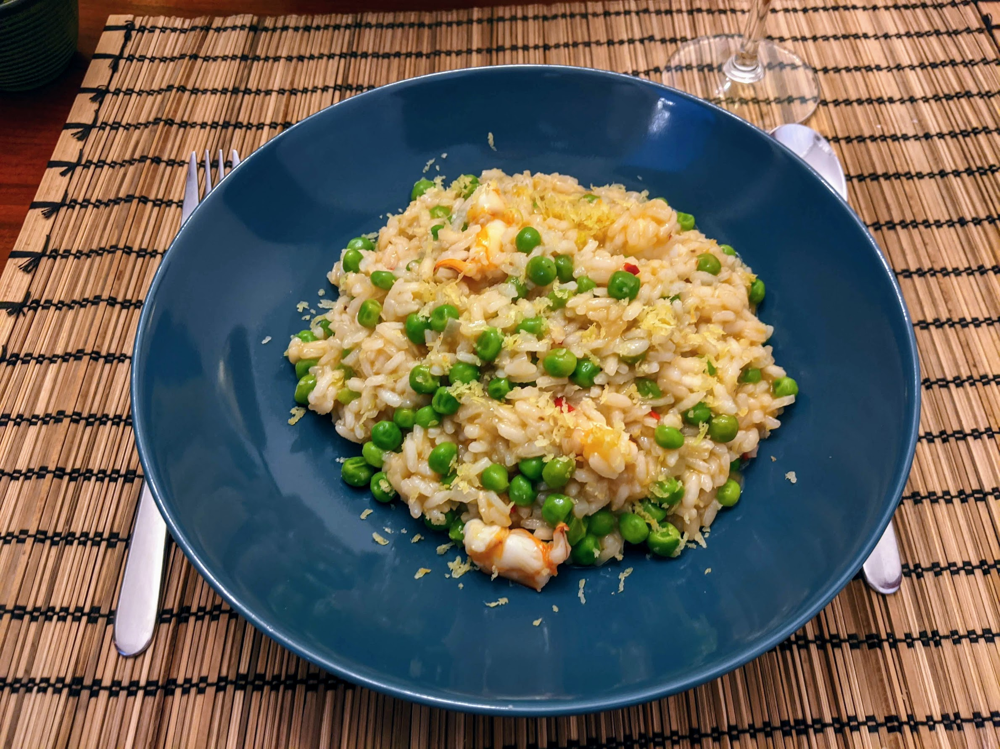

Risotto citronné aux crevettes et petits pois

Pour 3-4 personnes :
- 500g de crevettes crues, avec leur carapace
- 300-350g de riz à risotto
- 200g de petits pois frais ou décongelés
- Un gros oignon
- 50g de beurre
- 1,5L de bouillon de poisson
- Un piment
- Un verre de vin blanc
- Un citron
- Poivre, huile d'olive
- Couper la moitié du piment en lamelles. Décortiquer les crevettes, et faire revenir les carapaces et les têtes avec les lamelles de piment, au fond d'une casserole, avec deux bonnes cuillères à soupe d'huile d'olive. Écraser le tout grossièrement à la cuillère en bois pendant que ça cuit, pour extraire un maximum de goût, puis recouvrir du bouillon de poisson et laisser frémir.
- Éplucher et émincer les oignons. Les faire revenir dans le beurre dans une très grosse poêle, ou une grosse casserole à fond bas.
- Lorsque les oignons sont translucides, ajouter le riz, et lorsque le riz est translucide, ajouter le vin blanc.
- Faire cuire le risotto : ajouter le bouillon progressivement, louche par louche, en attendant que le liquide ait été absorbé pour ajouter plus de bouillon, et en mélangeant à chaque fois. C'est une bonne idée d'ajouter le bouillon au travers d'une passoire fine, pour éviter de se retrouver avec des petits bouts de carapace de crevette dans le risotto.
- Pendant ce temps, zester le citron et récupérer son jus.
- Lorsque c'est presque fini, genre deux louches avant la fin lorsqu'il y a à peine un peu de croquant dans le riz, ajouter les crevettes, les petits pois et le jus de citron dans le risotto.
- Finir la cuisson (les crevettes doivent devenir roses), servir immédiatement avec le zeste de citron disposé sur le dessus.
Retour à la liste des recettes